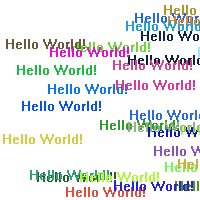

DrawText()
语法
Result = DrawText(x, y, Text$ [, FrontColor [, BackColor]])概要
Display the given string on the current output at the given x,y position. The current output is set with StartDrawing().
参数
x, y The location at which to draw the text. Text$ The text to draw. FrontColor (optional) The color to be used for the text. 如果未指定此参数，将使用与FrontColor()设置的默认颜色。这种颜色可以使用RGB或RGBA格式。 BackColor (optional) The color to be used for the background. If this parameter is not specified, the default color set with BackColor() will be used.
If the current DrawingMode() includes the #PB_2DDrawing_Transparent flag, then this parameter is ignored and the background is transparent.
返回值
Returns the new x position of the text cursor (ie the location just after the printed text).
备注
If DrawingMode() is set to non-transparent background and the current drawing mode uses the alpha channel then the text is first blended onto the background and then applied to the drawing output.
示例
If OpenWindow(0, 0, 0, 200, 200, "2DDrawing Example", #PB_Window_SystemMenu | #PB_Window_ScreenCentered) If CreateImage(0, 200, 200) And StartDrawing(ImageOutput(0)) DrawingMode(#PB_2DDrawing_Transparent) Box(0, 0, 200, 200, RGB(255, 255, 255)) For i = 1 To 30 DrawText(Random(200), Random(200), "Hello World!", RGB(Random(255), Random(255), Random(255))) Next i StopDrawing() ImageGadget(0, 0, 0, 200, 200, ImageID(0)) EndIf Repeat Event = WaitWindowEvent() Until Event = #PB_Event_CloseWindow EndIf

参阅
DrawRotatedText(), DrawingFont(), FrontColor(), BackColor()
已支持操作系统
所有